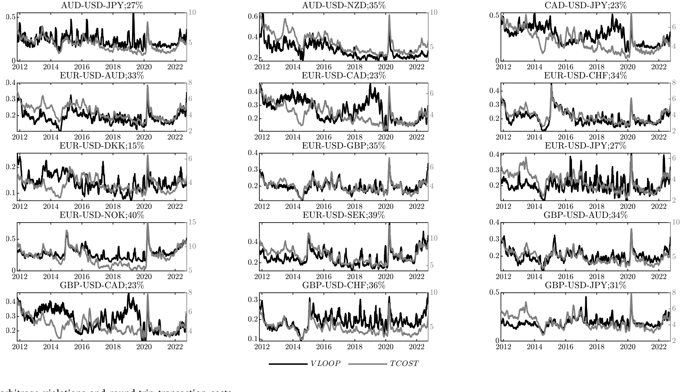
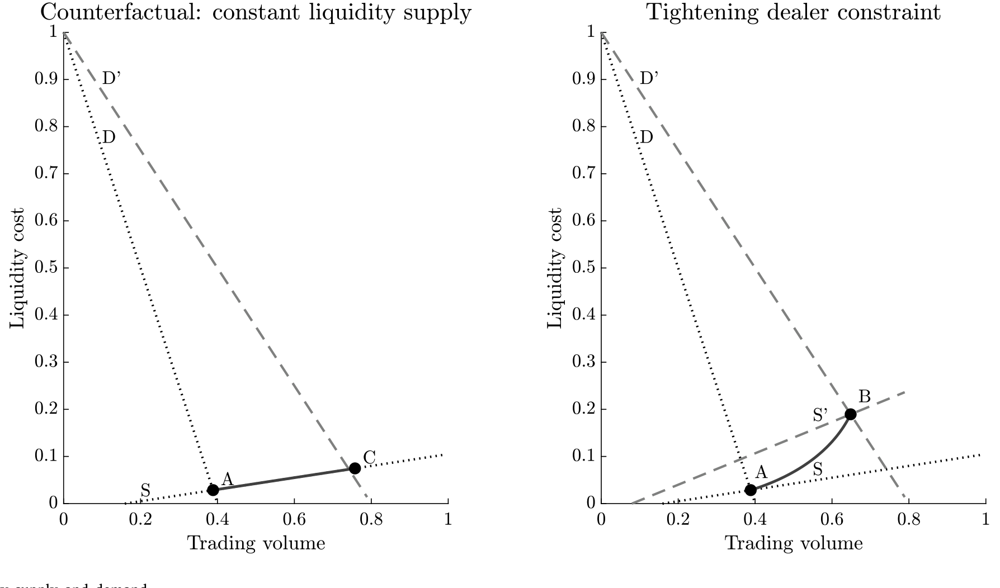
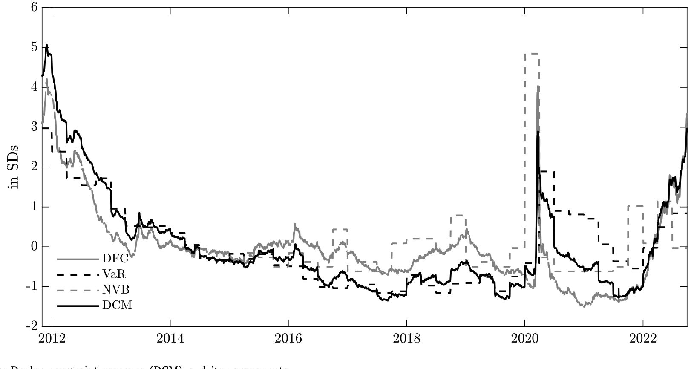
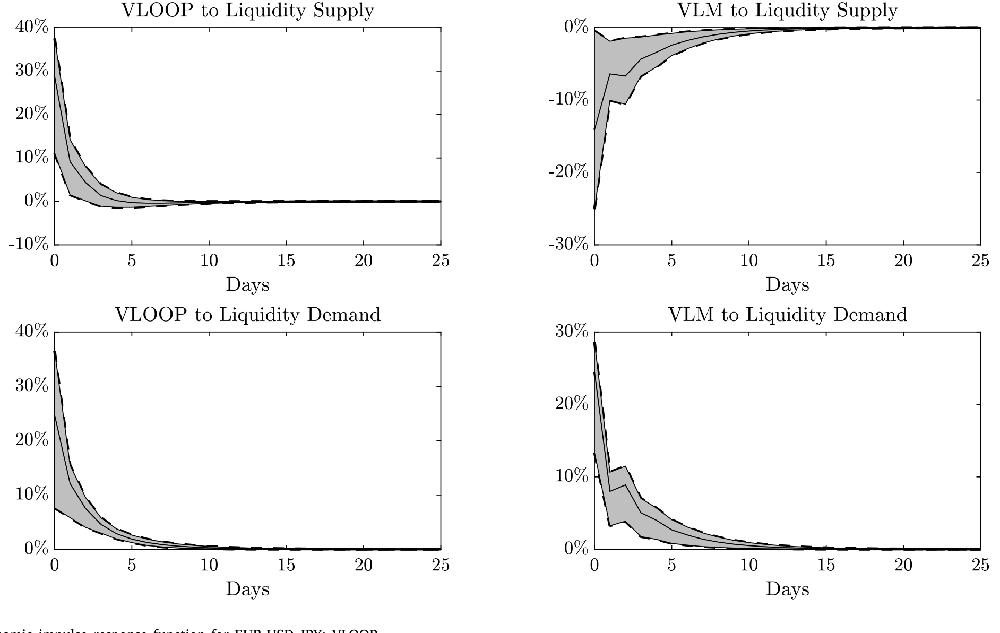
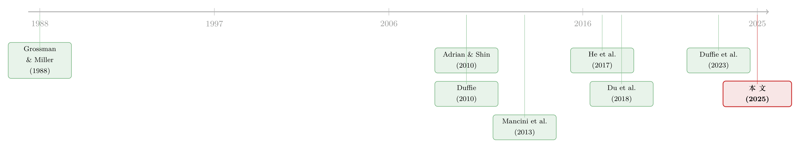

做市商的「风险预算」一旦绷紧，价格和成交量就开始各说各话
本文读的是 Huang, Ranaldo, Schrimpf & Somogyi (2025, JFE)：在外汇市场里，流动性的「价格」和「数量」平时是同涨同跌的——成交越火，做市商收的费越高；但当做市商的中介能力被约束绑住（融资成本更贵、VaR 限额更紧）时，流动性成本会不成比例地飙升，于是价量之间那条本来牢固的正相关，至少腰斩一半。而这道裂缝，几乎全部来自供给一侧弹性的下降，跟需求无关。
1 一个被默认、却很少被追问的「常识」
做市，几乎是金融市场里最古老的一门手艺。直觉上，它的定价逻辑朴素得近乎天经地义：你要的急、要的多，我就收你贵一点。于是我们会预期，流动性的价格（成本）和数量（成交量）应该是同向变化的——市场越活跃，做市商提供即时性 (immediacy) 的报酬就越高。这条正相关，在几乎所有关于流动性的实证文献里，都被当作背景板一样接受下来。
可问题是，这条「常识」真的在任何时候都成立吗？
把镜头拉到 2020 年 3 月，或者任何一次市场动荡的瞬间：成交量未必萎缩，有时甚至放大，但买卖价差、无套利偏离却像脱缰一样张开。这时候你会发现，价格涨得远比数量凶——价与量，忽然不再讲同一种语言。
Huang、Ranaldo、Schrimpf 和 Somogyi 这篇发表在 Journal of Financial Economics 上的论文，正是冲着这道裂缝去的。他们要问的是：到底是什么，让流动性的价与量在某些时候「脱钩」？ 而他们给出的答案，干净利落地落在一个词上——做市商的中介能力约束 (dealer intermediation constraints)。
这篇文章选的是外汇 (foreign exchange, FX) 现货市场作为舞台。这不是偶然：全球金融危机后，自营交易 (proprietary trading) 被监管层「清场」，银行系做市商 (dealer banks) 退回到纯粹的流动性提供者的角色——它们不再是跨市场套利者，而是靠自己的资产负债表去吸收、并为客户的订单流融资的「中间商」。这恰恰让「约束」这件事变得格外干净、格外要紧。
2 把价格拆成两块：VLOOP 与 TCOST
要研究流动性成本，先得有一把好尺子。作者的第一步棋下得很漂亮：他们没有去拼凑买卖价差，而是回到外汇市场最古老、最干净的一条无套利关系上——三角无套利 (triangular no-arbitrage)。
想象你拿着一欧元，先换成美元，再用美元换加元，最后把加元换回欧元，瞬间完成。如果三个汇率彼此自洽，你应该一分不多一分不少地拿回那一欧元。记三个货币对的中间价 (midquote) 为 \(m_j\)，其中 \(j \in \{x, y, z\}\)，\(x = USDEUR\)、\(y = EURCAD\)、\(z = USDCAD\)。一价定律 (law of one price) 是否被破坏，就看下面这个量偏离 1 有多远：
$$ \text{VLOOP} = \frac{m_z}{m_x m_y} $$
作者把它命名为 VLOOP（Violation of the Law Of one Price）。妙处在于，它不依赖基准货币的选择——无论你拿哪种货币当报价单位，它的绝对值都一样。沿着中介资产定价 (intermediary asset pricing) 这条线，VLOOP 可以被解读成中介约束的影子成本 (shadow cost)，也就是文献里常说的「资产负债表成本 (balance sheet cost)」。
但中间价的偏离还只是冰山一角。真要做一笔三角套利，你买的时候吃 ask、卖的时候被压到 bid，这中间的买卖价差也得算进去。把 bid–ask 价格代进去，作者证明三角套利的总收益可以被干净地分解成 VLOOP 与第二块——往返交易成本 (round-trip transaction cost)，记作 TCOST。它反映的是做市商为了承担库存风险（来自客户订单流的不平衡）而实际拿到的补偿。
这里有一个容易被忽略、却至关重要的细节：TCOST 在样本里通常比 VLOOP 更大。这意味着，中间价的那点偏离，其实落在买卖价差撑开的无套利边界之内——所以 VLOOP 测的并不是「可执行的套利利润」，而是 OTC 市场里、不同交易者面对不同摩擦时，价格能合法漂移多远。

Figure 3: No-arbitrage violations and round-trip transaction costs
实证上，这两把尺子确实在同向移动，但相关性平均只有约 54%——它们各自捕捉了流动性成本的不同侧面，这一点后面会反复用到。
3 一个「供给—需求」的简单模型
接着，一个自然的问题是：价与量的关系，凭什么会随约束而变？要把这件事讲清楚，光有测度不够，得有一个能说话的模型。作者搭了一个极简的流动性供求框架，我愿意花点笔墨把它一步步拆开——因为全文的识别逻辑，全藏在这几个方程里。
3.1 需求侧：价格敏感的流动性需求者
时点 \(t=0\)，流动性交易者到场。他们是价格敏感的：买卖价差越大，需求越低；同时波动率越高，需求越高（因为对基本面分歧更大、组合再平衡的需求更强）。设货币对 \(j\) 的买卖价差为 \(s_j = a_j - b_j\)，则对该货币对的交易需求为 \(\sigma(1 - s_j)\)。
需求在三个货币对之间是不平衡的。假设货币对 \(x\) 里有 \(\pi > 1/2\) 的交易者是买方，于是 \(x\) 上出现净买压 \((2\pi - 1) > 0\)；而 \(y\) 上对称地出现净卖压 \((1 - 2\pi) < 0\)；\(z\) 上买卖各半。于是需要做市商去吸收的需求失衡是：
$$ d_x = \sigma(1 - s_x)(2\pi - 1), \quad d_y = \sigma(1 - s_y)(1 - 2\pi), \quad d_z = 0 $$
直觉很清楚：交易者整体想把欧元换成美元、把欧元换成加元，这份净失衡，最终要落到做市商的资产负债表上。
3.2 供给侧：被两道约束夹住的做市商
真正关键的一步在于供给侧。有一个单位质量的竞争性做市商，他们面对两道约束：
- 债务融资成本 (debt funding cost) \(\eta\)：吸收方向性订单流要靠发债融资，成本是凸的 \(\eta(q_j)^2\)——头寸越大，边际融资越贵；
- VaR 限额 (Value-at-Risk limit) \(\omega\)：有 \(\omega\) 比例的做市商面对紧的 VaR 阈值 \(T_L\)，其余 \(1-\omega\) 面对松的 \(T_H\)。某个做市商 \(i\) 在货币对 \(j\) 上的 VaR 是 \(VaR_j^i \equiv \sigma \times q_j^i\)，必须满足 \(\sigma \times q_j^i \le T_i\)。
把两者合起来，做市商 \(i\) 的效用函数就是「交易收益」减去「凸融资成本」：
这里有个不起眼但要命的设定：因为做市商从零库存出发，跨货币对之间没有净额对冲（netting）的好处——每一笔失衡都得实打实地用资产负债表扛下来。这正是约束能咬住价格的微观基础。
3.3 两条命题：约束如何同时抬价、压量、并撕裂价量关系
把需求和供给放在一起求均衡，模型吐出两条核心命题。
命题 1（价格被抬高）：当做市商部门更受约束时——也就是融资成本 \(\eta\) 更高、和/或 VaR 对更大比例做市商绑定（\(\omega\) 更高）——VLOOP 和 TCOST 都会更高。此外，两者都随波动率 \(\sigma\) 上升。
直觉是：VaR 一绑紧，受约束的做市商被迫缩手，剩下的「未受约束」做市商就得吃下更大一份失衡的订单流；而他们要在更高的融资成本下扛下这份库存，自然要求更陡的补偿——价格被顶上去。
命题 2（价量脱钩）：这才是全文的灵魂。当约束收紧，流动性供给曲线向内移动并变陡，结果是成本上升、但做市商中介的成交量（相对反事实）下降。于是价与量之间的相关性，随约束收紧而下降。
这一步在数学上看得很清楚。记均衡数量与价格之比 \(q^*/p^*\)，附录给出（这里忠实照搬论文符号）：
$$ \frac{q^*}{p^*} = \frac{\sigma(2\pi - 1)\big(\sigma(1 - \omega) + \eta\,\omega T\big)}{\eta\big((2\pi - 1)\sigma^2 - \omega T\big)} $$
而它对两道约束的偏导都是负的：
$$ \frac{d}{d\eta}\!\left(\frac{q^*}{p^*}\right) = -\frac{(2\pi - 1)\sigma^2(1 - \omega)}{\eta^2\big((2\pi - 1)\sigma^2 - \omega T\big)} < 0, \qquad \frac{d}{d\omega}\!\left(\frac{q^*}{p^*}\right) < 0 $$
换句话说，约束越紧，同样多一点的价格，对应的成交量越少——价量比被压下去。更进一步，作者还证明了成交量 \(VLM\) 与 VLOOP、TCOST 的比值同样随 \(\eta\)、\(\omega\) 下降：当需求曲线右移（客户更想要流动性），在不变的约束下价与量是等比例上升的；可一旦约束收紧、供给曲线变陡，价格就会不成比例地比数量涨得更猛。
这就是全文那个反复要讲透的「一个核心」：约束 → 供给弹性下降 → 供给曲线变陡 → 价量脱钩。

Figure 2: Liquidity supply and demand
4 把模型搬到数据里：CLS、DCM 与平滑转移
模型说得漂亮，但能不能在数据里看见？这需要两样东西：一份能看到做市商中介成交量的数据，和一把能测约束松紧的尺子。
数据来自 CLS Group——一个覆盖全球外汇结算的机构，让作者得以在全球尺度上观察客户—做市商之间的成交量，而不再像早期文献那样只能盯着 Reuters、EBS 这些银行间平台的订单流。
约束的测度则更见功力。对应模型里的两道约束，作者构造：用做市商的债务融资成本代理 \(\eta\)；用已实现 VaR 和一个季度内 VaR 被突破的次数捕捉 VaR 约束 \(\omega\) 的松紧。把 10 家主要外汇做市银行的这三条时间序列做横截面平均，再取第一主成分 (first principal component)，就得到一个综合的做市商约束测度 (Dealer Constraint Measure, DCM)。

Figure 4: State variables: Dealer constraint measure (DCM) and its components
计量上最关键的选择，是用平滑转移回归（logistic smooth transition / LSTAR）模型。为什么不直接拿一个危机虚拟变量去切样本？因为「约束」这件事不是非黑即白的开关，「受约束的状态」应当是内生地、随时间平滑变化的——LSTAR 让数据自己去决定何时进入受约束的机制 (regime)，这跟模型里 \(\omega\)、\(\eta\) 连续变化的设定天然契合。
三个核心实证发现，正好对上模型：
- 其一，VLOOP 与 TCOST 同向移动，但平均相关性只有约
54%； - 其二，当做市商部门基本不受约束时，流动性成本与中介成交量之间的相关性是正的，落在
9%到25%之间——这正是「成交越多、报酬越高」的那条朴素直觉； - 其三，也是最惊人的：当约束收紧，两个流动性成本测度都不成比例地相对成交量上升；在做市商部门受约束的时段，流动性成本与中介数量之间的条件相关性下降至少 50%。
那条本来牢固的价量正相关，就这样被约束硬生生掰断了一半。
5 真正关键的一步：是供给变了，还是需求变了？
讲到这里，一个挑剔的读者一定会追问：价量脱钩，凭什么一口咬定是供给弹性下降？万一你那个 DCM，本身就跟影响需求的因素纠缠在一起呢？——毕竟约束收紧的时候，往往也是市场恐慌、需求结构剧变的时候。
于是反转出现：作者用了两套办法，把需求的扰动摁住，再看裂缝是否仍在。
第一套是密集的固定效应 (fixed effects)（时间维 + 截面维）加控制变量——外汇波动率、价格冲击 (price impact) 的度量等等，用来吸收可观测与不可观测的需求侧因素。
第二套才是真正的硬功夫：一个带符号约束 (sign restrictions) 的结构向量自回归 (structural VAR, SVAR)，显式地把流动性的需求冲击和供给冲击拆开。这套识别紧扣 Goldberg (2020) 与 Goldberg & Nozawa (2020)——用同一套符号约束去分离供需。拆出来之后，再把供给冲击和需求冲击分别当作「约束收紧」的替代度量，去解释价量相关性的变化。
结果干净得让人安心：只有流动性供给冲击（而非需求冲击），在经济意义和统计意义上都显著地驱动了价量相关性的变动。需求侧，被排除了。

Figure 5: Dynamic impulse response function for EUR-USD-JPY; VLOOP
这一步是全文识别的支点。它把「约束→供给弹性下降」这条因果链，从一堆同时发生的现象里剥了出来——价量脱钩不是因为客户的需求忽然变了脾气，而是因为做市商这一侧，被风险预算绑住了手脚。
顺带一提，作者还把机制外推到了两个方向：一是接上 Duffie et al. (2023)，说明美国国债市场里波动率与流动性成本在常态下同涨、在做市商资产负债表利用率高时脱钩，正是同一个机制；二是把分析扩展到外汇远期 (forwards) 与掉期 (swaps)，发现那里约束对流动性的解释力更强。这暗示该机制可能是 OTC 市场的一个普遍现象，而不只是外汇现货的特例。
6 文献脉络
把这篇论文放回它生长的那条藤蔓上，会看得更清楚。
最早，关于流动性的供求语言，可以追溯到 Grossman & Miller (1988) 那套经典的做市商即时性框架。沿着「中介摩擦如何反噬资产价格」这条主线，Adrian & Shin (2010) 把杠杆与 VaR 的顺周期性写进了银行的资产负债表，Duffie (2010) 则用「慢速移动的资本 (slow-moving capital)」一词，点破了为什么套利偏离会久久不能弥合。

到了实证层面，外汇市场里 Mancini et al. (2013)、Karnaukh et al. (2015) 记录了资金流动性 (funding liquidity) 与市场流动性 (market liquidity) 的相关，但停在了「相关」上，没去追问背后的机制。与此同时，中介资产定价的大旗由 He et al. (2017) 的杠杆比率扛起，而无套利偏离这一侧，Du et al. (2018) 用抛补利率平价 (covered interest parity, CIP) 的偏离给出了最有名的「资产负债表成本」证据（关于资金流如何掀动汇率与 CIP 偏离，可参见《一封邮件，如何掀动一国的汇率与套利定价？》）。
这篇论文恰好坐在这几条线的交汇处：它不满足于「相关」，而是用一个供求模型把价与量一起请进来，证明这层关系临界地依赖于做市商的中介能力；它也不去研究跨市场套利者，而是把镜头对准了被约束的做市商 (constrained dealers) 本身——这正是它区别于 Shleifer & Vishny (1997)、Gromb & Vayanos (2002) 那条「受约束的套利者」传统的地方。如果说国债市场里也有一个孪生的故事，那么 Duffie et al. (2023) 与本文互为镜像（关于国债做市能力如何被挤占，可参见《一张资产负债表，两个市场：当国债拍卖悄悄挤掉了 MBS 的做市能力》）。
值得一提的是，「无风险市场里的风险厌恶」这个看似矛盾的主题，本博客也评过一篇姊妹作（见《无风险市场里的风险厌恶：是谁给做市商系上了「风险限额」这根绳》）——VaR 限额这根绳，原来在不止一个市场里都系着做市商的手。
7 评论与延伸（Q&A + 研究方向）
(a) 几个可能的疑问
Q：VLOOP 既然不是「可执行的套利利润」，为什么还能当流动性成本的尺子？
因为在 OTC 市场里，不同交易者面对的摩擦（交易成本、价格冲击、融资成本）各不相同，中间价的偏离未必能被任何人无成本地套走。论文里 TCOST 通常大于 VLOOP，恰恰说明这点偏离落在买卖价差撑开的无套利边界之内。所以 VLOOP 测的是「价格能合法漂移多远」，沿中介资产定价的解读，它就是约束的影子成本——这是它的经济含义，而非套利机会的大小。
Q：约束收紧时价量脱钩，会不会只是因为危机期成交量本身缩了，纯粹是个机械现象？
这正是作者用 SVAR 要排除的担忧。如果只是需求萎缩导致量缩，那应该是需求冲击在驱动。但拆开供需后，只有供给冲击显著——需求冲击对价量相关性的变化没有解释力。再加上密集的固定效应和波动率、价格冲击等控制变量，机械性的量缩解释被摁住了。
Q：为什么用 LSTAR，而不是简单地拿一个「危机 dummy」切样本？
因为「受约束」不是一个非此即彼的开关。模型里 \(\eta\)、\(\omega\) 是连续变化的，受约束的程度应当平滑地、内生地随时间变化。LSTAR 让数据自己决定转移到受约束机制的时点与速度，避免了人为划线带来的随意性，也更贴合理论设定。
Q：DCM 是三个指标的第一主成分，会不会把不相干的东西也卷进来了？
作者做了稳健性：换用 He et al. (2017) 的杠杆比率、Andersen et al. (2019) 的 CDS 利差、以及 Du et al. (2018) 的 CIP 偏离等更宽的资产负债表容量代理，结论一致。这说明 DCM 抓到的确实是「中介约束」这个共同因子，而非某个单一指标的噪声。
Q：这套机制只是外汇现货的特例吗？
不像。论文把机制外推到外汇远期与掉期（那里约束的解释力更强），还接上了美国国债市场（Duffie et al., 2023）。这暗示「约束→供给弹性下降→价量脱钩」可能是 OTC 市场的一个普遍规律。当然，外推到信用债等更分散的市场是否成立，仍是开放问题。
Q：模型里假设做市商零库存出发、跨货币无对冲收益，这会不会太强？
这是为了让约束能「咬住」价格而做的简化。现实中做市商当然有存量库存、也有跨品种对冲。但作者论证这与常见的风险管理实践（鼓励做市商把订单簿保持平盘）一致；放松它会让数学复杂，但不改变「约束抬价、压量、撕裂价量」的定性结论。
(b) 几个可能的研究问题与提案
1. 把这套机制搬到公司债市场
【经济故事】公司债是典型的 OTC 做市市场，交易商资产负债表约束（如 Volcker 规则、SLR）对其流动性的影响一直是热点。本文的「价量脱钩」预测是否在信用债成立？即：当交易商受约束时，价差相对成交量是否不成比例地上升？ 【可行性】中。数据上 TRACE 提供逐笔成交与成交量，交易商身份可部分识别；约束测度可沿用 DCM 思路或用交易商 CDS/杠杆。难点在于公司债没有三角无套利那样干净的「价格」尺子，需另找流动性成本度量（如 Roll、价格冲击）。
2. 外资做市商 vs. 本土做市商：约束的「国籍」是否重要？
【经济故事】外汇做市高度集中在少数全球性银行手中。当这些跨境做市商受本国监管约束（如年末资产负债表收缩）时，对非美元货币对的流动性冲击是否更大？这把「约束」与「外资持有人」两条线接了起来。 【可行性】中。CLS 数据可按做市商所在地分组；监管约束的外生冲击可用季末/年末窗口或巴塞尔 III 落地的时点。识别上可借年末效应做类 DiD。
3. 约束的「传染」：一个货币对的约束如何外溢到另一个
【经济故事】既然做市商跨货币对无法对冲、库存彼此独立占用风险预算，那么某个货币对的大额失衡是否会通过共享的 VaR 预算，挤占其它货币对的做市能力？这是「风险预算」层面的流动性溢出。 【可行性】高。CLS 多货币对数据 + SVAR 框架天然适合做跨货币对的脉冲响应。可在本文 SVAR 上扩展为多货币对系统，识别共享约束渠道。
4. 把机制写进危机预警：DCM 能否前瞻性地预测流动性枯竭？
【经济故事】如果约束收紧先于价量脱钩，那么 DCM 或其分量（VaR 突破次数）或许能作为流动性脆弱性的领先指标，对央行的市场监测有直接价值。 【可行性】高。纯预测性练习，数据现成；难点是区分「预测」与「同期相关」，需做严格的样本外检验。
5. 客户异质性：谁在约束期被「挤出」了流动性？
【经济故事】供给曲线变陡时，价格敏感的客户应当首先被挤出。不同类型客户（对冲基金、企业、央行）的成交量在约束期如何重新分配？这关系到约束的分配效应。 【可行性】中低。需要带客户类型标签的成交数据，CLS 的客户分类粒度有限，可能要结合特定做市行的内部数据，识别上较难做到干净。
参考文献
- Adrian, T., Shin, H.S. (2010). Liquidity and leverage. Journal of Financial Intermediation 19(3), 418–437.
- Adrian, T., Shin, H.S. (2013). Procyclical leverage and value-at-risk. Review of Financial Studies 27(2), 373–403.
- Adrian, T., Etula, E., Muir, T. (2014). Financial intermediaries and the cross-section of asset returns. Journal of Finance 69(6), 2557–2596.
- Andersen, L., Duffie, D., Song, Y. (2019). Funding value adjustments. Journal of Finance 74(1), 145–192.
- Du, W., Tepper, A., Verdelhan, A. (2018). Deviations from covered interest rate parity. Journal of Finance 73(3), 915–957.
- Du, W., Hébert, B., Li, W. (2023). Intermediary balance sheets and the treasury yield curve. Journal of Financial Economics 150(3), 103722.
- Duffie, D. (2010). Presidential address: Asset price dynamics with slow-moving capital. Journal of Finance 65(4), 1237–1267.
- Goldberg, J. (2020). Liquidity supply by broker-dealers and real activity. Journal of Financial Economics.
- Goldberg, J., Nozawa, Y. (2020). Liquidity supply in the corporate bond market. Journal of Finance.
- Grossman, S.J., Miller, M.H. (1988). Liquidity and market structure. Journal of Finance 43(3), 617–633.
- He, Z., Kelly, B., Manela, A. (2017). Intermediary asset pricing: New evidence from many asset classes. Journal of Financial Economics 126(1), 1–35.
- Huang, W., Ranaldo, A., Schrimpf, A., Somogyi, F. (2025). Constrained liquidity provision in currency markets. Journal of Financial Economics 167, 104028.
- Mancini, L., Ranaldo, A., Wrampelmeyer, J. (2013). Liquidity in the foreign exchange market: Measurement, commonality, and risk premiums. Journal of Finance 68(5), 1805–1841.